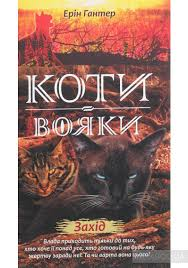

Сюжет першої книги другого циклу "Північ"
Четверо котів із різних Кланів отримують загадкове пророцтво: вони мають разом вирушити в далеку подорож і почути, що їм скаже північ. Та чи правильний вибір зробили Зоряні предки? Чи зможуть обрані коти забути про власні суперечки і зрозуміти, що тепер майбутнє всього лісу в їхніх лапах?
Сюжет другої книги другого циклу "Сходить Місяць"
Обрані коти мають повернутися до лісу і передати Кланам повідомлення від Півночі. Але чому Зореклан вказав їм найскладніший шлях додому? Навіщо їм чужі проблеми, коли і власних вистачає по самі вуха? На кожне питання є багато відповідей, але треба обрати правильну, і при цьому зберегти відданість рідним Кланам, одне одному і зоряним предкам.
Сюжет третьої книги другого циклу "Світанок"
Повернувшись до лісу, обрані коти мають переконати Клани об'єднатись і вирушити на пошуки нової домівки. Але як це зробити, якщо ніхто не знає, куди саме треба йти і що чекає попереду? Хіба повірять досвідчені провідники словам юних котів і борсучихи? Небезпека вже зовсім поруч, і у знесилених, голодних Кланів обмаль часу. А Зореклан чомусь мовчить і не дає їм більше жодного знаку..
Сюжет четвертої книги другого циклу "Стожари"
Пліч-о-пліч, лапа в лапу чотири Клани подолали нелегкий шлях до нового дому, де на зголоднілих, виснажених котів чекає безліч здобичі, але ще більше — небезпек. Тепер вони мають забути все, що їх єднало, і знову стати суперниками, які відстоюють власні території. Чи витримають ці випробування справжня дружба і справжнє кохання? Чи правильне місце вказали їм зоряні предки? І головне — чи зможуть коти зрозуміти, що найнебезпечніший ворог причаївся не в хащах навколо, а серед них самих?
Сюжет п'ятої книги другого циклу "Сутінки"
На новій території стежки чотирьох Кланів розійшлися в різні боки. Тепер кожен з них знову сам по собі, як і було з давніх-давен заповідано вояцьким правильником. Проте небезпеки, що чатують у цих незвіданих місцях, можна подолати лише разом. Громові коти завжди готові простягнути лапу допомоги своїм сусідам, та найбільша біда приходить саме до їхнього табору — нещадний ворог, що палає помстою. У ці темні часи вони мусять виявити всю свою силу та мужність, а дехто — зробити нелегкий вибір, від якого залежить доля всього Клану.
Сюжет шостої книги другого циклу "Захід"
Ожинокіготь розривається між двома світами — реальним і потойбічним, де блукає його батько Тигрозір. З кожним днем йому все важче приховувати свою таємницю і притлумлювати жагу до влади, яку так вміло розпалюють в ньому батько і брат. Зрештою, йому таки випадає шанс отримати бажане. Та чи варте воно такої ціни? Чи розуміє Ожинокіготь, що від його вибору залежить доля усіх лісових котів?
